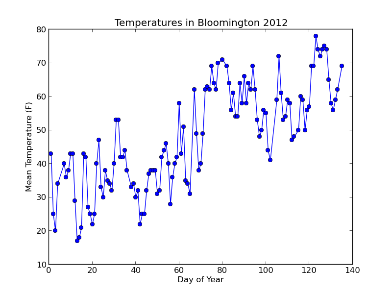
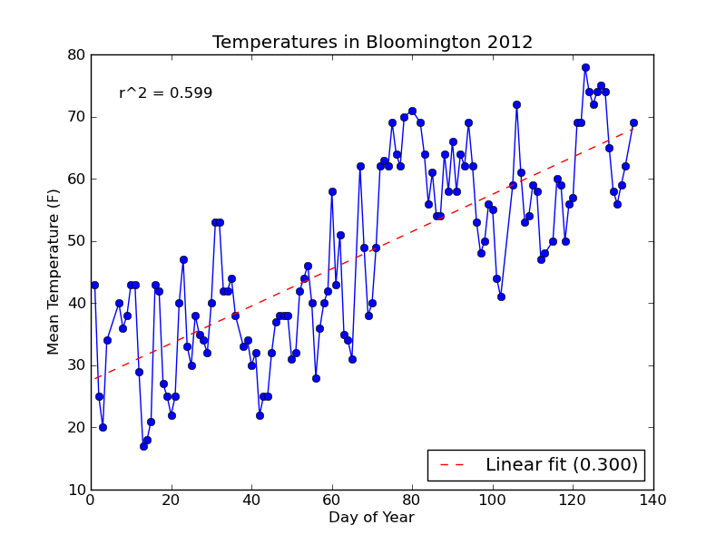
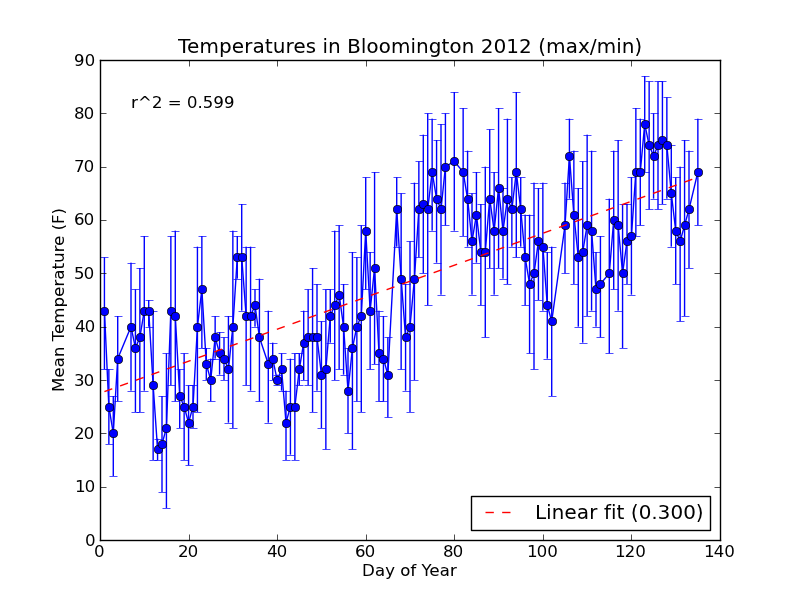
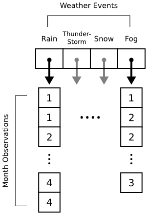
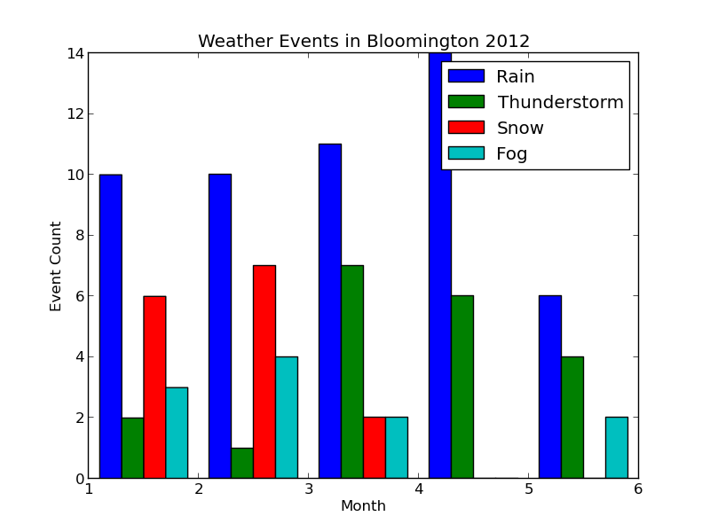
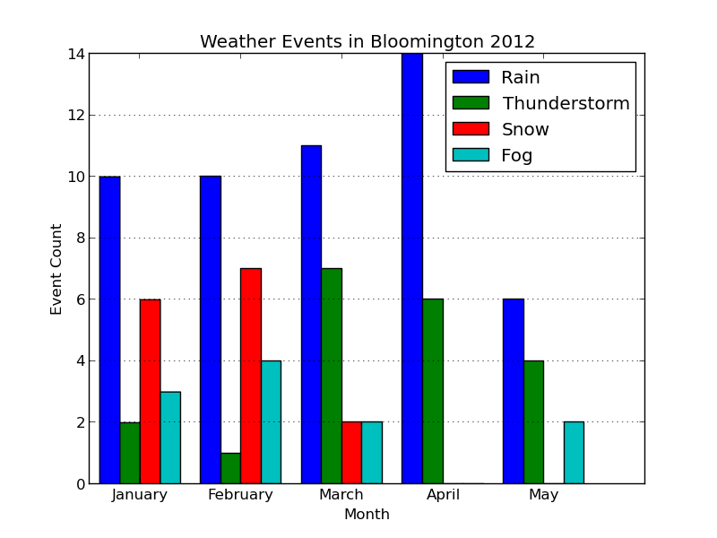

matplotlib and numpy: Double Trouble
Posted: 2012-05-19 | More posts about programming pythonFor this tutorial, we'll be plotting some weather data from a site call Weather Underground. You can download temperature readings and weather events for your local area in a comma-separated file.
I've put weather data for Bloomington, IN in a file called weather.csv. Each row is one day, and there are columns for min/mean/max temperature, dew point, wind speed, etc. We'll be plotting temperature and weather event data (e.g., rain, snow).
0. Installing matplotlib
I covered installing matplotlib in a previous tutorial. The matplotlib site also has installation instructions. I'll assume for the rest of the tutorial that you have matplotlib installed and working. If you can type this code at a Python shell:
from matplotlib import pyplot
and not receive any errors, then you're good to go.
1. Numpy Crash Course
The numpy module is how you do matrix-y stuff in Python. I'll give a quick example of why we'll need it. Imagine you were to type the following code into a Python shell:
x = [1, 2, 3, 4] print x * 5
What does this print? Why, this of course:
[1, 2, 3, 4, 1, 2, 3, 4, 1, 2, 3, 4, 1, 2, 3, 4, 1, 2, 3, 4]
By default, the * operator in Python copies the contents of a list however many times you specify. So x * 5 copied the contents of x five times and stuck them all together.
When we're doing matrix math in Python, it would be nicer if x * 5 produced [5, 10, 15, 20]. We could do this manually with a loop:
for i in range(len(x)): x[i] = x[i] * 5
We could even get fancy with Python's list comprehension syntax:
x = [x_i * 5 for x_i in x]
For a list with only four elements, this won't be so bad. For larger lists, however, it will be quite slow. Using numpy avoids the performance hit by doing the heavy lifting in C instead of in Python. Here's how we'd do the previous example with numpy:
import numpy as np x = np.array([1, 2, 3, 4]) x = x * 5 print x
This prints array([ 5, 10, 15, 20]) which is what we would expect. The array(...) lets you know that x is a numpy array. Onward!
2. Reading the Data
As with many programming problems, our first step is to read the data into memory. I've started a script called plot_data.py with a few import statements and some utility functions. I'll explain these functions in detail as we go forward.
import numpy as np import matplotlib.pyplot as pyplot from datetime import datetime import os event_types = ['Rain', 'Thunderstorm', 'Snow', 'Fog'] num_events = len(event_types) def event2int(event): return event_types.index(event) def date2int(date_str): date = datetime.strptime(date_str, '%Y-%m-%d') return date.toordinal() def r_squared(actual, ideal): actual_mean = np.mean(actual) ideal_dev = np.sum([(val - actual_mean)**2 for val in ideal]) actual_dev = np.sum([(val - actual_mean)**2 for val in actual]) return ideal_dev / actual_dev
In past tutorials, we've either manually parsed our data file(s) or used Python's csv reader. Because of our focus on numpy here, we're going to use the loadtxt function. By passing in the right options, we can get loadtxt to parse our weather.csv file directly into a numpy array.
For a first pass, I've written the following function to read in the weather data:
def read_weather(file_name): data = np.loadtxt(file_name, delimiter=',', skiprows=1, converters = { 0 : date2int }, usecols=(0,1,2,3,21)) return data #-------------------------------------------------- data = read_weather('data/weather.csv') print data
The first two parameters, delmiter and skiprows tell loadtxt to split fields based on commas and skip the first row of the file (which contains column names). numpy doesn't handle dates, so I've used the converters parameter to have have loadtxt convert column 0 (a date string) into an integer using my date2int function. The last parameter, usecols, tells loadtxt to ignore all columns in the file except the first, second, third, forth, and twenty-second column (the date, temperature, and weather event columns).
Unfortunately, running this code produces the following error:
$ python plot_data.py
Traceback (most recent call last):
File "plot_data-2.py", line 34, in <module>
data = read_weather("data/weather.csv")
File "plot_data-2.py", line 28, in read_weather
usecols=(0,1,2,3,21))
File "/usr/lib/python2.7/dist-packages/numpy/lib/npyio.py", line 796, in loadtxt
items = [conv(val) for (conv, val) in zip(converters, vals)]
ValueError: could not convert string to float: Rain
The final line tells us that numpy can't convert the string "Rain" into a floating point number. This is from the weather events column in our data, which contains text like "Rain" or "Snow-Fog". We could try and write a converter for this column too, but I've chosen to simply have numpy bring the column in as a string (which we'll manually parse later).
To do this, we pass in a special object for the dtype parameter of loadtxt. This object can be constructed by giving a dictionary to the numpy.dtype function. The code below provides names and data types for all of the columns we'll be using:
def read_weather(file_name): dtypes = np.dtype({ 'names' : ('timestamp', 'max temp', 'mean temp', 'min temp', 'events'), 'formats' : [np.int, np.float, np.float, np.float, 'S100'] }) data = np.loadtxt(file_name, delimiter=',', skiprows=1, converters = { 0 : date2int }, usecols=(0,1,2,3,21), dtype=dtypes) return data
The last column format is given as "S100", which means "string up to 100 characters in length." numpy needs to know the maximum size of the column for efficiency, so I gave myself plenty of room with 100 characters. Running this new code produces the following output:
$ python plot_data.py [(734503, 53.0, 43.0, 32.0, 'Rain') (734504, 32.0, 25.0, 18.0, 'Snow') (734505, 27.0, 20.0, 12.0, '') (734506, 42.0, 34.0, 26.0, '') (734509, 52.0, 40.0, 28.0, '') (734510, 47.0, 36.0, 24.0, '') (734511, 51.0, 38.0, 24.0, '') (734512, 57.0, 43.0, 28.0, '') (734513, 45.0, 43.0, 40.0, 'Rain') (734514, 43.0, 29.0, 15.0, 'Fog-Snow') (734515, 19.0, 17.0, 15.0, 'Snow') (734516, 27.0, 18.0, 9.0, 'Snow') ...
We're finally in business. Each row in our data set consists of a timestamp (the date converted to an integer), the maximum, mean, and minimum temperature, and the weather events that occurred that day. We're going to start by plotting the mean temperature versus the day of the year. Since we've given names to each of our columns, we can pull them out easily:
def read_weather(file_name): dtypes = np.dtype({ 'names' : ('timestamp', 'max temp', 'mean temp', 'min temp', 'events'), 'formats' : [np.int, np.float, np.float, np.float, 'S100'] }) data = np.loadtxt(file_name, delimiter=',', skiprows=1, converters = { 0 : date2int }, usecols=(0,1,2,3,21), dtype=dtypes) return data #-------------------------------------------------- data = read_weather('data/weather.csv') min_temps = data['min temp'] mean_temps = data['mean temp'] max_temps = data['max temp'] dates = [datetime.fromordinal(d) for d in data['timestamp']] events = data['events'] for date, temp in zip(dates, mean_temps): print '{0:%b %d}: {1}'.format(date, temp)
Each column can be extract individually from the data array by using data['column name']. I've used the datetime.fromordinal function on the timestamp column to convert the integers back into datetime objects.
Using the handy built-in zip function, I've printed out pairs of dates and mean temperatures. I use advanced string formatting to print the month, day, and temperature (see the datetime documentation for date formatting information). The program now gives the following output:
Jan 01: 43.0 Jan 02: 25.0 Jan 03: 20.0 Jan 04: 34.0 ... May 11: 59.0 May 12: 62.0 May 14: 69.0
Everything looks good, so let's get started plotting.
3. Temperature Plot
We're going to start with a simple line plot that has the day of the year on the x-axis and the mean temperature for that day on the y-axis. Our plotting function, called temp_plot, will take in dates and times, and give us back a matplotlib figure object. Here's the code:
def temp_plot(dates, mean_temps): year_start = datetime(2012, 1, 1) days = [(d - year_start).days + 1 for d in dates] fig = pyplot.figure() pyplot.title('Temperatures in Bloomington 2012') pyplot.ylabel('Mean Temperature (F)') pyplot.xlabel('Day of Year') pyplot.plot(days, mean_temps, marker='o') return fig
We start by computing the day of the year for each date. The datetime module lets us subtract dates from each other, producing a timedelta object. We subtract each date from January 1st of 2012, adding 1 so that our count will start from 1 instead of 0. The days field on a timedelta object gives the total number of days (in this case, from January 1st).
Next, we create a new matplotlib figure. In between calls to pyplot.figure, matplotlib's plotting functions will draw new plots on top of old ones. We'll use this fact to add a trend line to our plot shortly.
After adding a title and some axis labels to our figure, we call pyplot.plot with our days (x values) and mean_temps arrays (y values). I've also passed in 'o' to the optional marker parameter so that small circles will be plotted for each data point.
In the main body of the program, we use the os module to create a "plots" directory (checking if it exists first). Next, we call our temp_plot function and then use savefig to save the figure out to a png file:
data = read_weather('data/weather.csv') min_temps = data['min temp'] mean_temps = data['mean temp'] max_temps = data['max temp'] dates = [datetime.fromordinal(d) for d in data['timestamp']] events = data['events'] if not os.path.exists('plots'): os.mkdir('plots') fig = temp_plot(dates, mean_temps) fig.savefig('plots/day_vs_temp.png')
Running $ python plot_data.py should create a "plots" folder and put a file inside called "day_vs_temp.png" that looks like this:

Not bad! Let's add a trend line to the plot based on a simple linear model of the data.
3.1 Adding a trend line
By using numpy's polyfit function, adding a trend line is a snap. This function takes our x and y values (days and mean_temps), and gives us back a slope and intercept (the final parameter is the degree of the fitted polynomial -- we pass 1 for a linear fit).
slope, intercept = np.polyfit(days, mean_temps, 1)Using the slope and intercept, we can plot a trend line by computing "ideal" temperatures for each day according to the old y = mx + b formula. With our variables below, this will be ideal_temps = (slope * days) + intercept. Note that I've changed the days = ... line to days = np.array(...) so that we can do mathematical operations directly on the array.
def temp_plot(dates, mean_temps): year_start = datetime(2012, 1, 1) days = np.array([(d - year_start).days + 1 for d in dates]) fig = pyplot.figure() pyplot.title('Temperatures in Bloomington 2012') pyplot.ylabel('Mean Temperature (F)') pyplot.xlabel('Day of Year') pyplot.plot(days, mean_temps, marker='o') slope, intercept = np.polyfit(days, mean_temps, 1) ideal_temps = intercept + (slope * days) r_sq = r_squared(mean_temps, ideal_temps) fit_label = 'Linear fit ({0:.2f})'.format(slope) pyplot.plot(days, ideal_temps, color='red', linestyle='--', label=fit_label) pyplot.annotate('r^2 = {0:.2f}'.format(r_sq), (0.05, 0.9), xycoords='axes fraction') pyplot.legend(loc='lower right') return fig
To make the plot a little more useful, I've annotated the plot with the R-squared value of the fit. pyplot.annotate lets you put text on the figure in a variety of ways. Here, I've set the xycoords parameter to "axes fraction" so that annotate interprets my coordinates (0.05, 0.9) as fractions between 0 and 1 relative to the figure axes. The (0.05, 0.9) means to place the text horizontally 5% from the y-axis (left) and 90% from the x-axis (bottom).
The final call to pyplot.legend places a legend on the figure. You must include a label parameter on at least one plot object for this to work (I've included it on the trend line plot call). By default, the legend will show up in the upper-right corner of the figure. This will get in the way on our current plot, so I moved the figure to the lower-right with the loc parameter.
With the changes above, here's the new plot:

Notice that the string formatting ({0:.3f}) has rounded the R-squared value and slope label for us to three decimal places.
3.2 Adding "error" bars
Since we also have the min and max temperatures in our data, let's add "error" bars to our plot to show the temperature range on each day. We'll modify temp_plot to take in two additional parameters (min_temps and max_temps), and plot the temperature range if they both have values (i.e., are not None).
Adding error bars requires us to use the pyplot.errorbar function instead of pyplot.plot. It takes additional parameters (xerr and yerr) for the x and y errors. We will use yerr, and pass in an array with two rows: one for error above each data point, and one for the error below. This array is easily computed by subtracting the max and min temperatures from the mean, and then stacking the two arrays together row-wise with numpy.vstack.
def temp_plot(dates, mean_temps, min_temps = None, max_temps = None): year_start = datetime(2012, 1, 1) days = np.array([(d - year_start).days + 1 for d in dates]) fig = pyplot.figure() pyplot.title('Temperatures in Bloomington 2012') pyplot.ylabel('Mean Temperature (F)') pyplot.xlabel('Day of Year') if (max_temps is None or min_temps is None): # Normal plot without error bars pyplot.plot(days, mean_temps, marker='o') else: # Compute min/max temperature difference from the mean temp_err = np.row_stack((mean_temps - min_temps, max_temps - mean_temps)) # Make line plot with error bars to show temperature range pyplot.errorbar(days, mean_temps, marker='o', yerr=temp_err) pyplot.title('Temperatures in Bloomington 2012 (max/min)') slope, intercept = np.polyfit(days, mean_temps, 1) ideal_temps = intercept + (slope * days) r_sq = r_squared(mean_temps, ideal_temps) fit_label = 'Linear fit ({0:.2f})'.format(slope) pyplot.plot(days, ideal_temps, color='red', linestyle='--', label=fit_label) pyplot.annotate('r^2 = {0:2f}'.format(r_sq), (0.05, 0.9), xycoords='axes fraction') pyplot.legend(loc='lower right') return fig #-------------------------------------------------- data = read_weather('data/weather.csv') min_temps = data['min temp'] mean_temps = data['mean temp'] max_temps = data['max temp'] dates = [datetime.fromordinal(d) for d in data['timestamp']] events = data['events'] if not os.path.exists('plots'): os.mkdir('plots') # Plot without error bars fig = temp_plot(dates, mean_temps) fig.savefig('plots/day_vs_temp.png') # Plot with error bars fig = temp_plot(dates, mean_temps, min_temps, max_temps) fig.savefig('plots/day_vs_temp-all.png')
The new plot is saved to a file named day_vs_temp-all.png and looks like this:

If you need to compute standard error for your errorbar plot, you can use scipy.stats.sem from the scipy module.
For our next plot, we'll do a multi-part histogram of the weather events for each month.
4. Event Histogram
Histograms in matplotlib are generated using the pyplot.hist function. This function takes an array of data, which can itself contain arrays (for a multi-part histogram). We want to count events per month, so we'll need to create an array for each type of event. Inside these arrays will be observations like [1, 1, 2, 3, 3] for "January", "January", "February", "March", "March". Here's a diagram to help out:

When pyplot.hist receives our data, it will attempt to "bin" the month observations automatically. By default, it will break observations into 10 bins. We want a bin for each month instead, and we want the bins aligned properly to the month numbers (1 = January, 2 = February, etc.). The bins parameter to pyplot.hist takes either a number (representing the desired number of bins) or a sequence (representing the desired bin edges). In the code below, we pass range(1, 5 + 2) to ensure that our bins start at 1 (for January) and go through 5 (for May).
def hist_events(dates, events): event_months = [] for i in range(num_events): event_months.append([]) # Build up lists of months where events occurred for date, event_str in zip(dates, events): if len(event_str) == 0: continue # Skip blank events month = date.month # Multiple events in a day are separated by '-' for event in event_str.split('-'): event_code = event2int(event) event_months[event_code].append(month) # Plot histogram fig = pyplot.figure() pyplot.title('Weather Events in Bloomington 2012') pyplot.xlabel('Month') pyplot.ylabel('Event Count') bins = np.arange(1, 5 + 2) pyplot.hist(event_months, bins=bins, label=event_types) pyplot.legend() return fig
The main body of the program is updated to call hist_events and save the resulting figure to plots/event_histogram.png.
data = read_weather('data/weather.csv') min_temps = data['min temp'] mean_temps = data['mean temp'] max_temps = data['max temp'] dates = [datetime.fromordinal(d) for d in data['timestamp']] events = data['events'] if not os.path.exists('plots'): os.mkdir('plots') fig = temp_plot(dates, mean_temps) fig.savefig('plots/day_vs_temp.png') fig = temp_plot(dates, mean_temps, min_temps, max_temps) fig.savefig('plots/day_vs_temp-all.png') fig = hist_events(dates, events) fig.savefig(os.path.join('plots', 'event_histogram.png'))
When we run $ python plot_data.py, the new plot looks like this:

Each collection of bars represents a month, and the individual bars represent the number of Rain, Thunderstorm, etc. events observed for that month. The figure's legend was populated by passing event_types in for the label parameter of pyplot.hist.
The plot looks good, but it would be nice to properly label the months. We could do this manually with pyplot.xticks as follows:
pyplot.xticks( (1.5, 2.5, 3.5, 4.5, 5.5), ('January', 'February', 'March', 'April', 'May') )
This will label each bin in the center (hence the .5 added to each number) with the proper month name. If our data grows to include more months, however, we'll have to manually extend the number of bins and our labels. Let's change hist_events to keep track of the range of months in the data. Additionally, we'll use Python's calendar module to automatically get the month names.
At the top of the program, we'll import the calendar module:
import calendar and then redefine hist_events as follows: def hist_events(dates, events): event_months = [] for i in range(num_events): event_months.append([]) # Build up lists of months where events occurred min_month = 13 max_month = 0 for date, event_str in zip(dates, events): if len(event_str) == 0: continue # Skip blank events month = date.month min_month = min(month, min_month) max_month = max(month, max_month) # Multiple events in a day are separated by '-' for event in event_str.split('-'): event_code = event2int(event) event_months[event_code].append(month) # Plot histogram fig = pyplot.figure() pyplot.title('Weather Events in Bloomington 2012') pyplot.xlabel('Month') pyplot.ylabel('Event Count') pyplot.axes().yaxis.grid() num_months = max_month - min_month + 1; bins = np.arange(1, num_months + 2) # Bin edges pyplot.hist(event_months, bins=bins, label=event_types) # Align month labels to bin centers month_names = calendar.month_name[min_month:max_month+1] pyplot.xticks(bins + 0.5, month_names) pyplot.legend() return fig
During the process of building our observation arrays, we now track the minimum and maximum months observed. This allows us to automatically create our bin edges, and let's us grab months names from the calendar module by indexing into the calendar.month_name list.
Note that the bins variables was created using numpy.arange, which is a shortcut for bins = numpy.array(range(1, num_months + 2)). Making bins a numpy array lets us call pyplot.xticks with bins + 0.5, centering month_names on each bin.
As a bonus, I've also added a horizontal grid using the axis.grid function. You can add both a horizontal and vertical grid at the same time by calling pyplot.grid.
Here's the updated plot:

Looks ready for publication!
Contents © 2013 Michael Hansen - Powered by Nikola